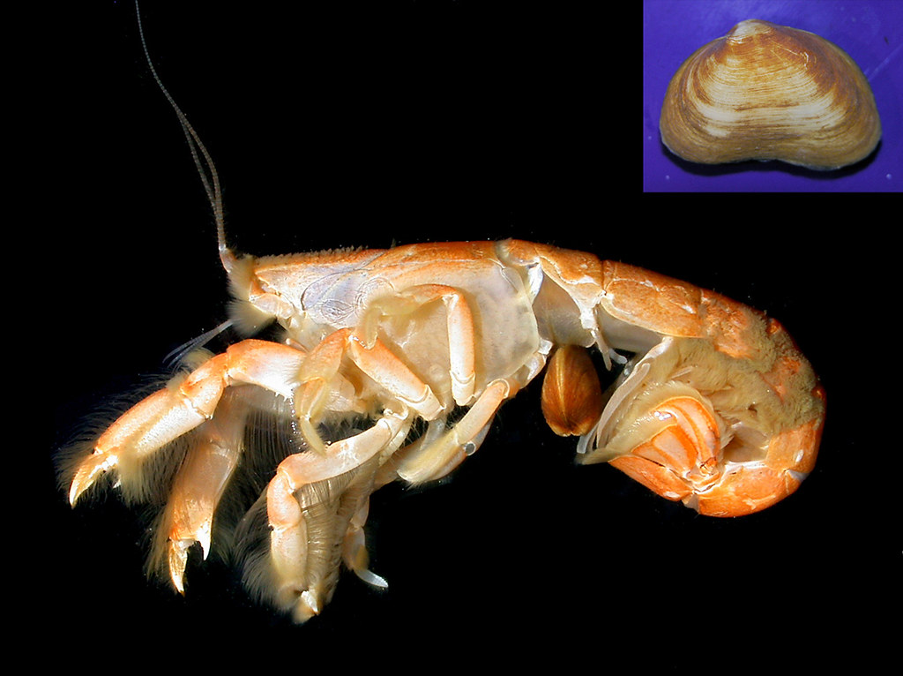
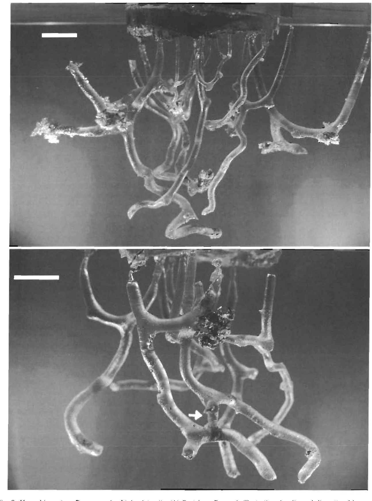
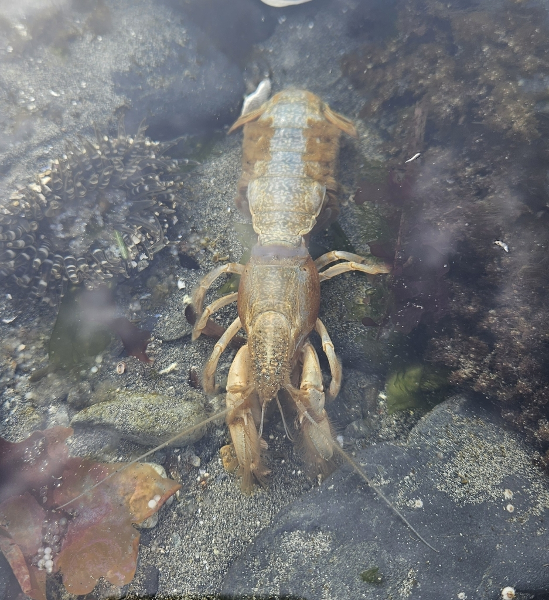
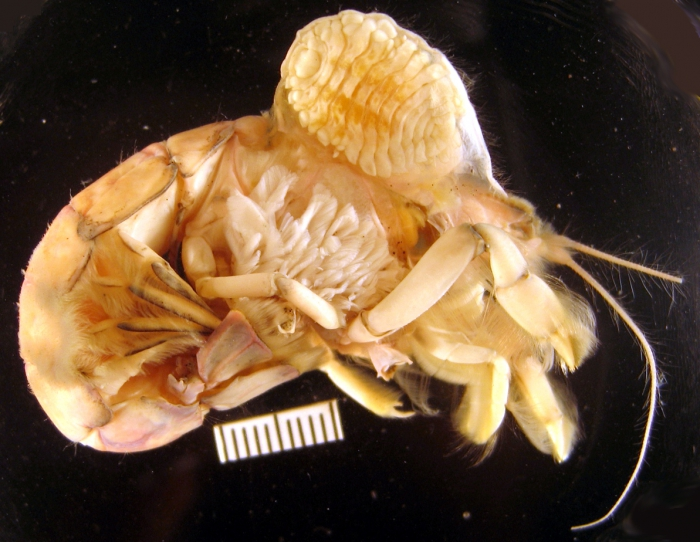
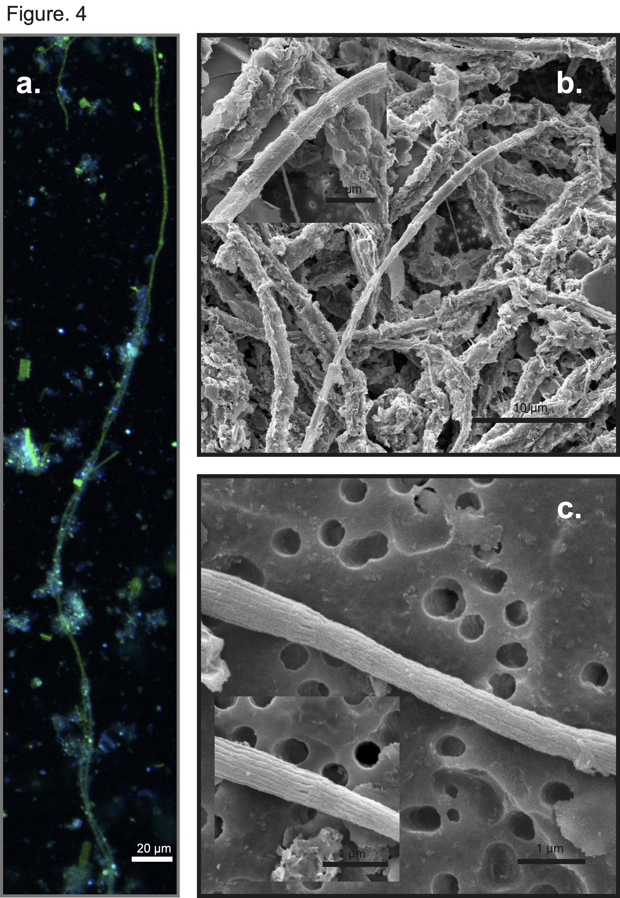

Taxonomy and Classification
Upogebia pugettensis, commonly known as the Blue Mud Shrimp, belongs to the family Upogebiidae within the order Decapoda. Originally described as Gebia pugettensis in 1852, it was later reclassified under the genus Upogebia.
- Phylum: Arthropoda
- Class: Malacostraca
- Order: Decapoda
- Family: Upogebiidae
Morphology and Physical Characteristics
Upogebia pugettensis can grow up to 100 mm in length, with northern populations typically larger than their southern counterparts. It has a light blue-green to deep olive-brown color, with a characteristic large, tridentate rostrum and short eyestalks. The body is divided into a cephalothorax and abdomen, with five pairs of thoracic appendages and three pairs of maxillipeds.

Ecological Role in Tidal Sediments
As a bioturbator, Upogebia pugettensis plays a critical role in aerating sediment and recycling nutrients in estuarine ecosystems. It constructs firm, permanent U- or Y-shaped burrows that are up to 46 cm deep, lined with mucus for stability. These burrows provide shelter for various commensal species and help facilitate nutrient exchange and decomposition processes in the sediment.

Feeding and Behavioral Characteristics
Upogebia pugettensis has been suggested to be a filter-feeding detritivore, drawing water into its burrow and trapping suspended particles using long setae on its pereopods. This filtering activity contributes to controlling phytoplankton density in estuarine waters. The species is known to exhibit ecosystem engineering behavior by affecting sediment composition, nutrient cycling, and community structure within its habitat.

Conservation and Environmental Impact
Populations of Upogebia pugettensis have been impacted by the invasive parasitic isopod Orthione griffenis, introduced to the Pacific coast in the 1980s. This parasite attaches to the gills of the Blue Mud Shrimp, reducing its reproductive capacity and contributing to population declines. The loss of U. pugettensis can lead to changes in sediment stability and nutrient availability, impacting the broader estuarine ecosystem.

Research on Upogebia pugettensis Burrow Microbiome
Our research focuses on the unique microbial communities within the burrow linings of U. pugettensis. These burrows are Y-shaped structures that extend into anoxic zones of the sediment, creating a distinct microenvironment influenced by the shrimp's bioirrigation activities. The burrows act as conduits for oxygen, sustaining suboxic and oxic conditions even in otherwise anoxic sediments. This dynamic environment supports diverse microbial communities, including filamentous cable bacteria (CB), which play a role in electrogenic sulfur oxidation and other biogeochemical processes.
The primary goals of our research are:
- Understanding Feeding Patterns: We examine the microbiome composition within burrow sediments to determine how U. pugettensis sustains itself through filter-feeding and nutrient acquisition. The microbiome shared between the shrimp and its commensal bivalve, Neaeromya rugifera, indicates a symbiotic relationship and potential reliance on sediment bacteria for nourishment.
- Unraveling Infection Chains: We investigate the parasitic infection by Orthione griffenis, which has significantly impacted U. pugettensis populations. Our research explores how the microbial community within the shrimp's burrows influences its susceptibility to parasitic infections and aims to identify intervention points for managing the parasite's spread.


Further Resources
More Stories Under Construction